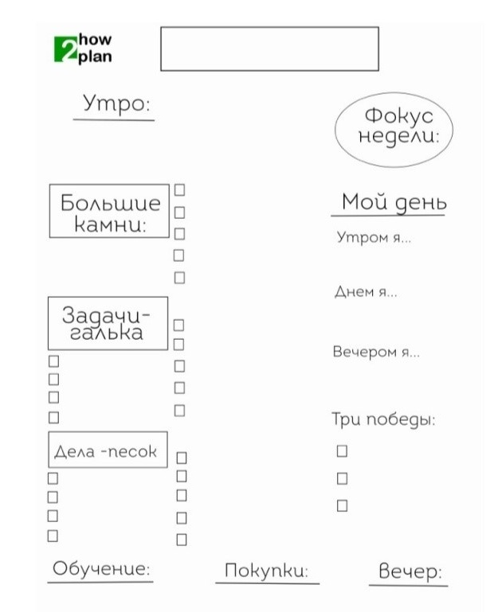

Как все успевать?
ВСЕ ДЕЛА - РАЗНОГО «КАЛИБРА»
Представьте, что у каждой задачи - свой удельный вес. Одна занимает 30 минут, другая - столько же времени, но по значимости они разные. Более важные дела, когда сделаны, вызывают глубокое чувство удовлетворения. Даже если это не было сложно или срочно!
Не думайте, что если дело кажется ой каким сложным, значит, это самое важное. Нет! Трудное легко перевести в понятное и простое, если сформулировать в плане на день лишь один понятный шаг. Подход «Больших камней» здорово помогает структурировать дела!
Представьте, что у вас есть две банки, в которые нужно поместить набор больших камней, много гальки и песка. Если положить сначала в банку песок, он утрамбуется, галька “ляжет” на песок и крупные камни вряд ли влезут, ведь всё пространство уже будет заполнено. Если же, наоборот, вы сначала положите камни, потом засыпете гальку и песок, то всё поместится, как на этой картинке. В тот же самый объём вы сможете вместить гораздо больше!
Это основной принцип того, каким образом можно планировать дела на неделю. Как правило, люди, которые чувствуют по жизни продвижение и позитивные изменения, ставят «большие камни» на первое место.
Большие «камни»
Задачи которые вас приведут к лучшему будущему. На камни приходятся высокие затраты энергии, но и отдача соответствует. Когда вы завершаете “камни”, то испытываете эмоции в стиле: «Победа, ура! Я молодец, я всё могу!». Не путайте камни с плохо сформулированными задачами в стиле «написать книгу». Такие пункты не должны вообще появляется в плане на день. Камни вы выбираете сами и они вовсе не должны занимать много времени или казаться неподъёмными. Они приносят явное улучшение рано или поздно в будущем - в профессии, материальном положении, отношениях, со здоровьем и так далее.
Обратите внимание, что камни будут меняться. Пока вы заводите новую привычку или начинаете сложное для вас дело - можете поставить такие задачи в список камней.
Но следите, что они не должны оставаться там вечно! Со временем привычка станет автоматической, а дело сдвинется с мертвой точки и действовать будет проще. Тогда на место старых камней придут новые дела ;)
«Галька»
Понятные привычные задачи. Они так же важны, их не сложно начать при условии, е слития вы всё-таки запланируете гальку. При прочих равных условиях вы всегда выберете такие дела, а не камни. Сюда относятся - уже назначенные понятные встречи, звонки, привычные дела. Нормально, что большую часть нашего плана составит галька.
«Песок»
Дела самого мелкого калибра. Например, ответить на сообщение, отреагировать на обновление, сделать какой-то звонок, заказать вещи онлайн. Энергии на такие дела тратится очень мало. Песок можно назвать делами-помощниками - они здорово позволяют переключиться и отдохнуть от более сложных задач, требующих погружения.
Смысл разделения задач на три группы в том, чтобы вы держали баланс. Прекрасно, если каждый день вы уделяете немного времени большим камням, желательно в ресурсное для вас время, когда непривычные вещи даются легко.
Планируете разумное количество гальки и не перегружаете план делами на 20 часов в сутки. И не забываете о песке, делах-помощниках - они здорово помогут вам в переключении и отдыхе! ЗАДАНИЕ Распределите все свои ближайшие дела на три группы - камни, галька и песок.
Для тренировки достаточно дел на ближайшую неделю или день. В списки попадают самые разные дела - рабочие, личные, ради результата и удовольствия. Нет абсолютных правил, что считать “большим камнем”, а что “песком”. Тип задачи зависит от вашего субъективного отношения.
Например, обучение новой профессии, которое продвинет вас вперёд и изменит жизнь в будущем, будет большим камнем если вам сложно и вы только что начали. Или галькой, если вы втянулись в процесс и вам легко делать уроки по курсу. Главное отличие камней от гальки - камни приводят к значимому результату в долгосрочной перспективе.
Написать статью в журнал, выучить язык для будущей профессии, читать каждый день 15 минут профессиональную литературу, пройти курс скорочтения или тайм-менеджмента, улучшить отношения в семье.
КАК СОЗДАТЬ ПЛАН НА ДЕНЬ?
Вы написали три списка и определили, что является камнями, галькой, а что песком. Как использовать это в планировании на день?
Большие камни ставьте в расписание первыми. Это не всегда утренняя задача. Но вы должны посмотреть на расписание и выбрать время или варианты, когда большие камни могут быть сделаны. В идеале каждый день планировать себе не менее 1 камня, тогда вы будете ощущать удовлетворение от прожитого дня в любом случае.
Лучшее время для камней? Зависит от хронотипа , если ваш хронотип утренний, то первые часы дня - ваше золотое ресурсное время. Если же хронотип вечерний - середина дня и ранний вечер сработают лучше всего. Но никому не рекомендуется переносить сложные дела на ночь, в это время любой хронотип уже устал.
Дальше представьте гальку большими блоками по 1,5-2 часа, где нужны схожие усилия. Например, если у вас несколько дел в одном районе, логично сделать всё за раз по пути. Или накопились звонки - их проще делать все за раз. Когда дела объединены по типу усилий (написать/ позвонить/ придумать), то вы справитесь с ними гораздо быстрее!
Песок по-своему важен, ведь эти дела помогают получить удовольствие, отдохнуть и переключиться. В перерывах смотрите на дела-песок и выбирайте, что можно сделать, в зависимости от своего состояния. Посмотрите, что у вас получилось на день и оцените: • если слишком много гальки, выделите главное и поставьте в скобки второстепенное • мало камней? Добавьте существенных задач. Не по времени, а по значимости. Камень может занимать всего 15 минут!
КАК ЗАПОЛНЯТЬ ЛИСТ НА ДЕНЬ?
Ниже - пример листа планирования на день. Забирайте интересные идеи и внедряйте в свой ежедневник!
Вечером делайте записи задач по трём группам на следующий день, чтобы спать со спокойной головой и не думать о списках. А утром удобно структурировать список и продумывать план дня.
Эти действия займут по 5 минут утром и вечером, но сэкономят вам много сил! Коротко зафиксируйте “Фокус недели” - это может быть новая привычка, достигаемая цель или напоминание самим себе о чём-то важном.
Заполните список “Утро” и “Вечер” - это ритуалы которые помогут начать день продуктивно и спокойно его завершить. Первый утренний час - хорошее время для стратегии, обучения, профессионального роста, медитации, зарядки, чтения, писательства, общения с близкими. Необязательно всё сразу, выбирайте актуально для вас ;)
Вечерние часы - это время выключенных гаджетов, расслабления, спокойных разговоров, настройки на сон. В лист заносите те действия, что для вас новые, непривычные, чтобы ничего не держать в голове.
Каждый день вы заполняете свое утро ритуалами и практиками, в зависимости от того, сколько времени у вас будет. Заполняйте дела-камни (от 1 до 5), гальку (5-10) и песок (5-10 задач). Вы можете дорисовывать нужное вам количество квадратиков и ставить галочки при выполнении.
Представьте, как пройдёт ваш день! Справа вы найдёте графу «Мой день». Распишите последовательность дел крупными блоками. Что вы будете делать утром, что днем, а что - вечером? Учитывайте ваши привычки, особенности, образ жизни. Так вы избавите себя от вопроса - чем сейчас заняться.
Рекомендую «закрывать» свой день несколько раз. Сколько успели из утреннего блока - поставили точку и остальное перенесли на завтра. Взялись за блок середины дня и переключились на вечер, когда время закончилось. Да, стоит несколько раз в день сверяться со своим планом как с маршрутом. ЗАДАНИЕ Составьте свою структуру лист для планирования на день!
Оставьте место для заметок и отмечайте значками статус выполнения задач! Вы увидите, что таким планировщиком пользоваться очень приятно.
КАК СДЕЛАТЬ ИЗ ПЛАНА НАВИГАТОР?
Обычно мы напрягаемся от плана - о, сколько всего нужно сделать! Нет конца и края делам! Но представьте, что вы едете на машине по навигатору. Это удобно, приложение показывает, куда ехать, нет напряжения, вы движетесь в потоке. Вот эта метафора и должна отражать то, как вы проживаете день. Здорово, если и план похож на навигатор, а не пыльную кипу дел! План-навигатор позволяет вам двигаться в желаемом направлении с нужной скоростью. Вы всегда можете перестроить путь, если что-то пошло не так и вам не нужно выбрасывать план куда подальше!

- Как сделать план навигатором
- Используйте значки, чтобы увидеть группы задач и объединять их в блоки. — Делайте паузы в течение дня, оценивайте сделанное и то, что реально успеть дальше. — Включайте в план разнообразные дела - отдых, покупки, мелкие задачи тоже считаются. Помните, что голова - плохое хранилище дел!
- Обновляйте статусы задач. Сделали частично и дальше нет времени - уже лучше, чем ничего, переносите остаток на завтра. Так вы избавите себя от залипания за делами в ущерб всему остальному и мобилизуетесь ;)
- Оценивайте, сколько времени потребуется на каждую задачу и что конкретно вы хотите сделать за это время. Это правило применимо абсолютно ко всему, очень помогает держать фокус, не распыляться и не заниматься ненужными размышлениями. Представьте, что у каждой задачи есть адекватный ценник времени!
Поэтому не пытайтесь тратить время бездарно на то, что не стоит стольких часов! Это просто. Чтобы сделать завтрак - целесообразно ли тратить полтора часа? Вряд ли, если это не какой-то особенный повод, а вы - не шеф-повар ресторана. Стоит ли тратить на уборку небольшой квартиры целый выходной день, без отдыха? Выглядит дорого и затратно.
Так можно разобрать любую задачу. Вы увидите, как подрастет эффективность, если в начале каждого дела вы точно назовете себе, что такое вы делаете и сколько времени имеет смысл в это вкладывать. Мозг получит ясную инструкцию и дела пойдут быстрее, проще, в потоке. Вы вовремя себя остановите, если увидите, что залипли или тратите время малоэффективно.